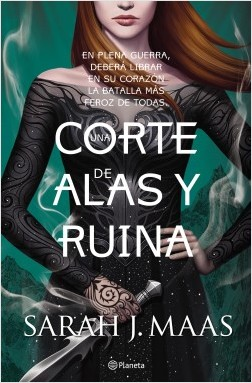
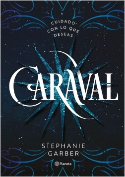
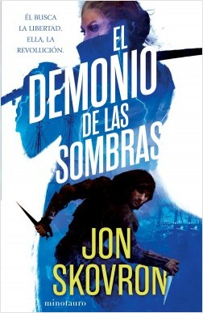
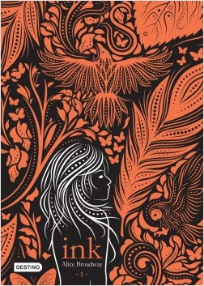

| EL LUGAR EN DONDE VIVES TU PROPIA REALIDAD |


Libros de Fantasía
|  |  |
|
Una corte de alas y ruina Sarah J. Maas |
Caraval Stephanie Garber |
| Feyre regresa a la Corte Primavera, decidida a reunir información sobre los planes de Tamlin y del rey invasor que amenaza con destruir Prythian. Para esto deberá someterse a un letal y peligroso juego de engaño, en el que un simple error podría condenar no solo a Feyre sino también a todo el mundo a su alrededor. A medida que la guerra avanza sin tregua, Feyre deberá determinar en cuáles de los deslumbrantes Altos Lores puede confiar y salir a buscar aliados en los lugares más inesperados. | Scarlett Dragna sueña con asistir a la celebración anual de Caraval, unos legendarios juegos que duran una semana y en los que la audiencia participa para ganar el Gran Premio. Caraval es magia, misterio y aventura. Y para Scarlett y su hermana representa la libertad y poder de huir de su estricto y cruel padre. Ahora Scar está a punto de casarse con un hombre al que nunca ha visto y cree que su sueño nunca se cumplirá. |
|  |  |
|
El demonio de las sombras Jon Skovron |
INK1 Alice Broadway |
| Red, quien está siendo entrenado por los biomantes para convertirse en un despiadado asesino, se ve cada vez más absorbido por las intrigas palaciegas. En su nuevo papel aprenderá que incluso la vida entre la nobleza puede ser peligrosa. Mientras se dedica a aterrorizar barcos imperiales como la pirata Dire Bane, Hope descubre una conspiración biomante de un alcance tan increíble que incluso la masacre del pueblo de su infancia parece nimia en comparación. | La piel de los habitantes de Saintstone es un libro abierto: cada acontecimiento importante se convierte en un tatuaje que los acompaña para siempre, les recuerda lo que los enorgullece, pero también lo que los avergüeza y desearían olvidar. Pocos poseen el don para interpretar la historia detrás de cada dibujo y Leora Flint es una de las privilegiadas. piel. |